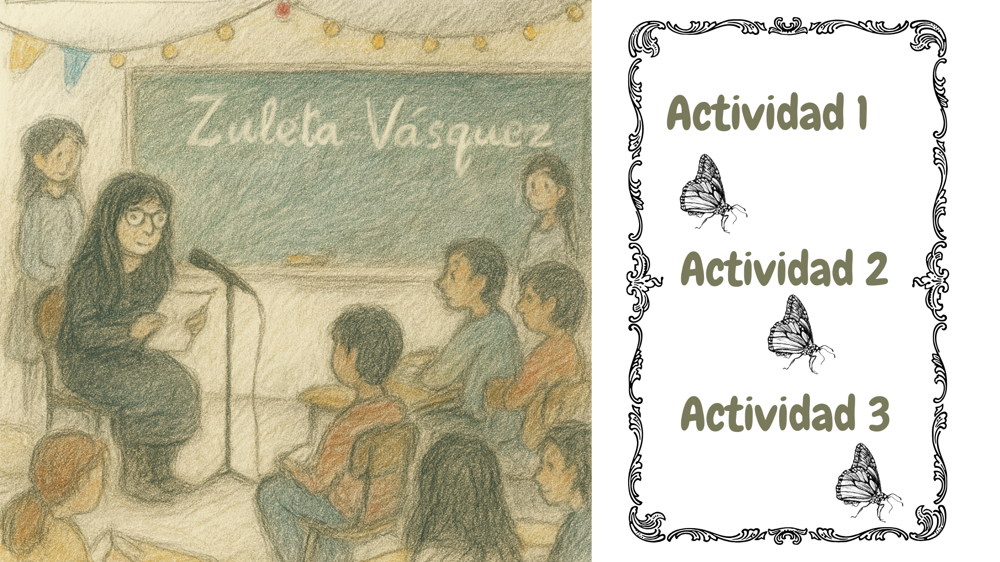

Texto
A continuación, se presentan las actividades sugeridas para desarrollar esta secuencia didáctica. Es posible seleccionar una, combinar dos o bien implementar la secuencia completa, según las necesidades del aula.
Cada actividad está diseñada para ser realizada en una clase de 90 minutos y se organiza en dos bloques para facilitar su implementación. Además, se deja un espacio de 10 minutos como margen en caso de retrasos, ajustes necesarios o para profundizar en algún aspecto según el ritmo del grupo.
